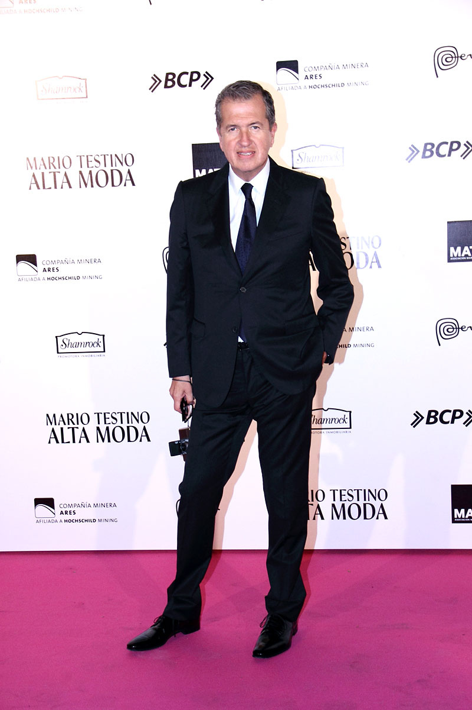
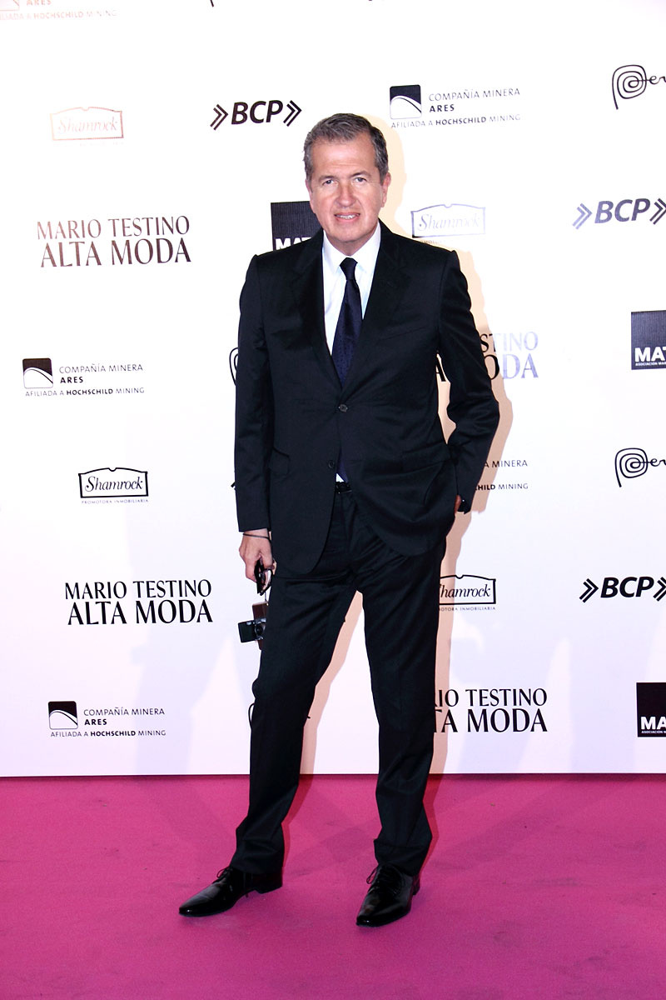

Mario Testino Silva (Lima, Perú, 30 de octubre de 1954) es un fotógrafo de modas peruano, actualmente establecido en Londres, Inglaterra.
Algunos conocedores de la industria fotográfica y de modelaje, aseguran que este fotógrafo peruano comenzó tomándole fotos a las llamas (hasta que se cansó porque estos mamíferos no sabían caminar con tacones). Sea cierto o no, ahora pasa la mayor parte de su vida tomando fotos para importantes revistas como Vogue y Vanity Fair.
Es conocido por sus brillantes campañas publicitarias y exóticas fotografías exquisitamente decoradas de la escena de alta costura. Dicho por varios expertos, Testino es de esos fotógrafos capaces de vender ropa con sus fotos. Aunque quizá su trabajo más recordado sea la sesión que le hizo a Lady Di para la portada de la revista Vantity Fair de 1997, una imagen que le hizo un lugar entre los fotógrafos más famosos del mundo.
Aquí os mostramos una introducción de Mario Testino.
 
 

| Año 1998: | Any Objections? |
| Año 1999: | Front Row Back Stage |
| Año 2001: | Alive (con Gwyneth Paltrow) |
| Año 2002: | Mario Testino: Portraits |
| Año 2003: | Kids |
| Año 2005: | Visionaire No. |
| Año 2007: | Let me in Lima, Perú |
| Año 2009: | Mario de Janeiro Testino |
| Año 2010: | Kate Moss by Mario Testino |
| Año 2012: | In your face |